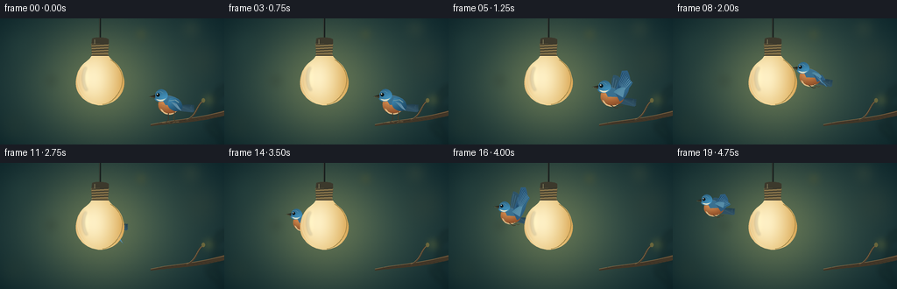
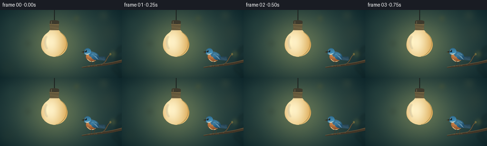

CODING AGENTS AS PIXEL WORLD MODELS
traex/GPT-6.1-Sol · dynamic_spatial_relationship_0043
点击播放 · 原生 RGB 像素
逐轮保存的候选
回放视频、检查图与代码变化。
每份候选均可单独播放。实际图片检查记录在下方工具轨迹中。
候选 01播放与检查图
点击播放 · 原生 RGB 像素


展开代码变化
--- 上一保存版本
+++ 本次保存版本
@@ -0,0 +1,191 @@
+from pathlib import Path
+import math
+import numpy as np
+from PIL import Image, ImageDraw, ImageFilter
+import artifact_io
+
+ROOT=Path(__file__).resolve().parent
+W,H,S=256,144,4
+rng=np.random.default_rng(32)
+
+def path(points):
+ # Each section is either a line point or a cubic control/control/end triple.
+ out=[points[0]]; p=np.array(points[0],float)
+ for q in points[1:]:
+ if len(q)==2 and isinstance(q[0],(float,int)):
+ out.append(q);p=np.array(q,float)
+ else:
+ a,b,c=map(lambda v:np.array(v,float),q)
+ for t in np.linspace(0,1,22)[1:]:
+ v=(1-t)**3*p+3*(1-t)**2*t*a+3*(1-t)*t*t*b+t**3*c
+ out.append(tuple(v))
+ p=c
+ return out
+
+def poly(d, pts, fill):
+ d.polygon([(round(x*S),round(y*S)) for x,y in pts],fill=fill)
+def line(d,pts,fill,width=1):
+ d.line([(round(x*S),round(y*S)) for x,y in pts],fill=fill,width=max(1,round(width*S)),joint='curve')
+def ellipse(d,box,fill,outline=None,width=1):
+ d.ellipse(tuple(round(v*S) for v in box),fill=fill,outline=outline,width=max(1,round(width*S)))
+
+# Quiet, lens-soft background: teal dusk, warm pool of light, and distant bokeh.
+y,x=np.mgrid[0:H*S,0:W*S].astype(float);x/=S;y/=S
+bg=np.zeros((H*S,W*S,3),float)
+bg[:]=[29,57,61]
+bg+=np.exp(-((x-120)**2/100**2+(y-74)**2/78**2))[...,None]*[34,32,16]
+bg+=np.exp(-((x-114)**2+(y-72)**2)/(2*43**2))[...,None]*[35,26,5]
+bg-=(((x-128)/160)**2+((y-70)/100)**2)[...,None]*[15,18,17]
+for cx,cy,r,col in [(25,32,12,[38,66,62]),(229,48,16,[54,69,57]),(17,122,11,[38,59,51]),(218,12,8,[62,77,61]),(58,71,6,[53,69,56]),(161,18,5,[78,87,53]),(238,93,5,[102,109,58])]:
+ a=.32*np.exp(-((x-cx)**2+(y-cy)**2)/(2*r*r))
+ bg=bg*(1-a[...,None])+np.array(col)*a[...,None]
+noise=rng.normal(0,.65,(H*S,W*S,1))
+background=Image.fromarray(np.uint8(np.clip(bg+noise,0,255)),'RGB').convert('RGBA')
+
+# Soft foreground plant silhouettes only at the frame edge.
+soft=Image.new('RGBA',background.size);d=ImageDraw.Draw(soft)
+line(d,[(256,150),(244,111),(250,79)],(14,34,33,95),2.5)
+for cx,cy,ang in [(251,108,-.7),(244,128,.8),(253,83,-.7)]:
+ p=[]
+ for t in np.linspace(0,2*math.pi,50):
+ xx=12*math.cos(t);yy=4*math.sin(t)
+ p.append((cx+xx*math.cos(ang)-yy*math.sin(ang),cy+xx*math.sin(ang)+yy*math.cos(ang)))
+ poly(d,p,(18,41,39,85))
+background=Image.alpha_composite(background,soft.filter(ImageFilter.GaussianBlur(3*S)))
+
+# A small, naturally curved branch, making the initial 'on the right' pose legible.
+branch=Image.new('RGBA',background.size);d=ImageDraw.Draw(branch)
+poly(d,path([(172,121),((200,115),(222,115),(256,105)),(256,111),((220,120),(199,119),(172,123))]),(66,54,39,255))
+line(d,path([(172,121),((200,115),(222,115),(256,106))]),(139,114, seventy:= seventy if False else 77,255),.75)
+line(d,path([(213,116),((225,111),(224,99),(232,94))]),(72,60,44,255),2)
+line(d,path([(213,115),((225,110),(224,99),(232,94))]),(142,117,78,255),.55)
+for i in range(16):
+ xx=181+i*4.8; yy=119-(xx-181)*.105
+ line(d,[(xx,yy),(xx+2,yy+1)],(40,36,29,150),.35)
+ellipse(d,(230,91,234,96),(106,102, sixty:=60,255))
+background=Image.alpha_composite(background,branch)
+
+# Opaque opal glass: its solid luminous surface supplies a strong depth occlusion.
+bulb=Image.new('RGBA',background.size)
+glass_pts=path([(105,40),((104,49),(92,49),(88,64)),((81,84),(98,99),(114,99)),((132,99),(147,83),(140,64)),((136,49),(125,49),(123,40)),(105,40)])
+mask=Image.new('L',background.size);md=ImageDraw.Draw(mask);poly(md,glass_pts,255)
+g=np.exp(-((x-106)**2/25**2+(y-68)**2/35**2))
+edge=np.clip(np.abs(x-114)/28,0,1)
+col=np.zeros_like(bg);col[:]=[225,183,104]
+col+=g[...,None]*[29,57,93]
+col-=edge[...,None]**3*[10,24,31]
+col+=np.exp(-((x-98)**2/4**2+(y-66)**2/19**2))[...,None]*[9,13,13]
+arr=np.dstack([np.clip(col,0,255).astype('uint8'),np.asarray(mask)])
+bulb=Image.fromarray(arr,'RGBA')
+d=ImageDraw.Draw(bulb)
+line(d,path([(105,43),((102,51),(92,52),(89,66)),((86,81),(98,95),(110,97))]),(255,239,185,230),.6)
+line(d,path([(126,47),((136,53),(142,65),(139,76)),((135,91),(123,98),(117,98))]),(204,146, sixty:=60,155),.75)
+# Broad soft vertical reflection blended over the glass.
+highlight=Image.new('RGBA',background.size);hd=ImageDraw.Draw(highlight)
+line(hd,path([(98,56),((93,63),(94,76),(99,82))]),(255,253,229,100),2.0)
+highlight=highlight.filter(ImageFilter.GaussianBlur(1.1*S))
+bulb=Image.alpha_composite(bulb,highlight)
+# Hanging cable and brushed dark brass socket.
+d=ImageDraw.Draw(bulb)
+line(d,[(114,0),(114,25)],(17,24,25,255),2.0)
+line(d,[(113.5,0),(113.5,24)],(76,78,64,255),.4)
+poly(d,path([(105,23),((107,21),(122,21),(124,24)),(124,33),(104,33),(105,23)]),(60,57,44,255))
+poly(d,[(104,29),(124,29),(123,42),(105,42)],(123,105, sixty:= sixty if False else 67,255))
+for yy in [30,33,36,39]:
+ line(d,[(104.5,yy),(123.5,yy-1)],(52,52,42,255),1.2)
+ line(d,[(105,yy+1),(123,yy)],(172,146,97,255),.6)
+line(d,[(104,42),(124,42)],(46,45,36,255),1.1)
+line(d,[(108,24),(108,29)],(138,131,97,255),.65)
+
+# Anatomical songbird rendered in a local coordinate system, with feather layering.
+BS=4; BW=112; BH=112
+
+def bird_image(flying,phase,scale,tilt):
+ im=Image.new('RGBA',(BW*S,BH*S));dd=ImageDraw.Draw(im)
+ ox,oy=50,55
+ def P(pts,c):poly(dd,[(a+ox,b+oy) for a,b in pts],c)
+ def L(pts,c,w=1):line(dd,[(a+ox,b+oy) for a,b in pts],c,w)
+ def E(box,c):ellipse(dd,(box[0]+ox,box[1]+oy,box[2]+ox,box[3]+oy),c)
+ def shape(pts,c):P(path(pts),c)
+ def shaded(pts,c,light):
+ m=Image.new('L',im.size);dm=ImageDraw.Draw(m);poly(dm,[(a+ox,b+oy) for a,b in path(pts)],255)
+ yy,xx=np.mgrid[0:BH*S,0:BW*S];xx=xx/S-ox;yy=yy/S-oy
+ h=np.exp(-((xx+5)**2/16**2+(yy+5)**2/12**2))
+ color=np.array(c)[None,None,:]+h[...,None]*np.array(light)[None,None,:]
+ layer=Image.fromarray(np.dstack([np.clip(color,0,255).astype('uint8'),np.array(m)]),'RGBA')
+ im.alpha_composite(layer)
+ # Fan of narrow tail feathers points opposite the beak.
+ for k in range(5):
+ ty=1+k*1.55
+ shape([(6,2),((13,0),(22,ty-1),(27,ty)),(25,ty+2),((15,ty+1),(11,8),(6,6))],(35+k*3,64+k*4,79+k*5,255))
+ L([(13,3),(24,ty+.5)],(80,115,125,200),.35)
+ if flying:
+ # The far wing stays behind the torso. Positive values represent an upstroke.
+ flap=math.sin(phase)
+ tipy=-9-25*flap
+ shape([(-2,-4),((-3,-11),(-5,tipy*.65),(-2,tipy)),((5,tipy-2),(14,tipy*.6),(13,-3)),(6,4)],(46,83,103,255))
+ for k in range(4):L([(-2+k*2,-7),(-1+k*3,tipy+3+k*2)],(81,120,141,255),.55)
+ # Belly and breast, with a cool blue mantle.
+ shaded([(-13,-5),((-9,-13),(4,-11),(11,-3)),((16,4),(5,12),(-4,11)),((-12,10),(-17,3),(-13,-5))],(127,67, thirty:=34),[93,77,47])
+ shape([(-11,-7),((-6,-13),(8,-9),(12,-2)),((5,1),(-1,0),(-6,1)),(-11,-7)],(58,112,143,255))
+ # Cream belly underneath the rusty-orange breast.
+ shape([(-10,6),((-7,11),(0,12),(6,8)),((4,13),(-9,14),(-12,5))],(220,184,132,255))
+ if not flying:
+ shaded([(-1,-7),((9,-9),(14,-1),(13,4)),((10,9),(4,9),(-1,5)),((-5,1),(-4,-3),(-1,-7))],(25,65,91),[35,66,80])
+ for k in range(6):
+ L([(0+k*1.2,-3+k*.45),(8+k*.7,5+k*.38)],(86+k*4,136+k*2,161+k*2,255),.55)
+ L([(-2,-4),(5,-5),(9,-2)],(133,168,171,255),.8)
+ else:
+ flap=math.sin(phase)
+ # Sweep the main wing smoothly around the shoulder; spread primary feathers at its tip.
+ tip=np.array([14.,-11.-28.*flap]);root=np.array([2.,-4.]);
+ elbow=np.array([10.,-6.-13.*flap])
+ shape([tuple(root),((0,-10),tuple(elbow+[-4,-3]),tuple(tip+[-7,-2])),tuple(tip+[-1,-3]),((tip[0]+7,tip[1]+7),(18,-1),(8,5)),tuple(root)],(45,92,126,255))
+ # Each primary feather is an independent tapered, round-ended contour.
+ for k in range(7):
+ start=np.array([4+k*.6,-4+k*.4]);end=tip+np.array([k*1.6-5, k*1.5])
+ ctrl=.4*start+.6*end+np.array([-2,0])
+ shape([tuple(start), (tuple(ctrl),tuple(end+[-1,-2]),tuple(end)),(end[0]+2,end[1]+1),(tuple(end+[1,4]),tuple(ctrl+[4,2]),tuple(start+[3,2]))],(30+k*3, seventy:=72+k*5,105+k*5,255))
+ L([tuple(start+[2,0]),tuple(ctrl+[1,1]),tuple(end+[.5,0])],(87+k*4,141+k*3,174+k*2,255),.4)
+ for k in range(3):
+ shape([(0+k*2,-5+k),((3+k*2,-9+k),(8+k*1.5,-7-8*flap),(10+k*1.3,-5-10*flap)),(7+k*2,-2+k)],(76+k*5,135+k*3,162+k*3,255))
+ # Round head; white cheek, tiny black eye and pointed horn-colored bill.
+ shaded([(-18,-10),((-18,-17),(-9,-20),(-5,-14)),((-1,-9),(-6,-3),(-12,-3)),((-17,-3),(-20,-5),(-18,-10))],(36,83,112),[32,65,79])
+ shape([(-17,-6),((-14,-3),(-9,-2),(-6,-7)),((-8,-5),(-13,-5),(-17,-6))],(217,221,200,255))
+ shape([(-18,-11),(-25,-8.5),(-18,-7)],(42,41,32,255))
+ L([(-24,-8.5),(-18,-8)],(153,137,91,255),.4)
+ E((-16.8,-12.7,-12.8,-8.7),(9,20,24,255))
+ E((-16.0,-12.2,-14.9,-11.1),(249,251,226,255))
+ L([(-17,-14),(-12,-15),(-9,-13)],(118,171,190,200),.45)
+ # Fine down on the breast and crisp feather shafts.
+ for k in range(9):
+ yy=0+k*.8;xx=-11+(k%3)*2.0
+ L([(xx,yy),(xx+.9,yy+1.3)],(237,178,109,95),.35)
+ if flying:
+ L([(-2,10),(4,13),(7,12)],( sixty:=60,54,40,255),.9)
+ L([(3,9),(10,11),(12,10)],(65,55,40,255),.85)
+ else:
+ L([(-3,10),(-3,18),(-6,21)],(64,55,42,255),1)
+ L([(4,9),(3,17),(6,20)],(73,62, forty:=40,255),1)
+ for a,b in [((-6,21),(-10,21)),((-5,20),(-1,21)),((6,20),(9,20)),((5,20),(2,21))]:
+ L([a,b],(114,98,67,255),.65)
+ im=im.rotate(tilt,Image.Resampling.BICUBIC,center=(ox*S,oy*S))
+ if scale!=1: im=im.resize((round(BW*S*scale),round(BH*S*scale)),Image.Resampling.LANCZOS)
+ return im,ox*S*scale,oy*S*scale
+
+positions=[(195,98),(195,98),(195,98),(195,97.7),(194,97),
+(188,89),(180,80),(169,72),(158,67),(146,66),(134,67),(123,69),(113,70),(102,70),(91,68),(81,64),(72,60),(64,57),(56,54),(48,51)]
+frames=[]
+for i,(cx,cy) in enumerate(positions):
+ canvas=background.copy()
+ flying=i>=5
+ scale=1 if i<5 else 1-.14*min(1,(i-5)/6)
+ tilt=0 if not flying else -4+4*math.sin(i*.7)
+ b,ox,oy=bird_image(flying,(i-5)*1.76+.65,scale,tilt)
+ canvas.alpha_composite(b,(round(cx*S-ox),round(cy*S-oy)))
+ # Lamp always lies in front of the flight path.
+ canvas=Image.alpha_composite(canvas,bulb)
+ frame=canvas.convert('RGB').resize((W,H),Image.Resampling.LANCZOS)
+ frames.append(np.asarray(frame,dtype=np.uint8))
+artifact_io.save(np.stack(frames),ROOT)
+print('Saved',len(frames),'RGB frames',np.stack(frames).shape)
候选 02播放与检查图
点击播放 · 原生 RGB 像素

展开代码变化
--- 上一保存版本
+++ 本次保存版本
@@ -56,13 +56,13 @@
# A small, naturally curved branch, making the initial 'on the right' pose legible.
branch=Image.new('RGBA',background.size);d=ImageDraw.Draw(branch)
poly(d,path([(172,121),((200,115),(222,115),(256,105)),(256,111),((220,120),(199,119),(172,123))]),(66,54,39,255))
-line(d,path([(172,121),((200,115),(222,115),(256,106))]),(139,114, seventy:= seventy if False else 77,255),.75)
+line(d,path([(172,121),((200,115),(222,115),(256,106))]),(139,114, 77,255),.75)
line(d,path([(213,116),((225,111),(224,99),(232,94))]),(72,60,44,255),2)
line(d,path([(213,115),((225,110),(224,99),(232,94))]),(142,117,78,255),.55)
for i in range(16):
xx=181+i*4.8; yy=119-(xx-181)*.105
line(d,[(xx,yy),(xx+2,yy+1)],(40,36,29,150),.35)
-ellipse(d,(230,91,234,96),(106,102, sixty:=60,255))
+ellipse(d,(230,91,234,96),(106,102, 60,255))
background=Image.alpha_composite(background,branch)
# Opaque opal glass: its solid luminous surface supplies a strong depth occlusion.
@@ -79,7 +79,7 @@
bulb=Image.fromarray(arr,'RGBA')
d=ImageDraw.Draw(bulb)
line(d,path([(105,43),((102,51),(92,52),(89,66)),((86,81),(98,95),(110,97))]),(255,239,185,230),.6)
-line(d,path([(126,47),((136,53),(142,65),(139,76)),((135,91),(123,98),(117,98))]),(204,146, sixty:=60,155),.75)
+line(d,path([(126,47),((136,53),(142,65),(139,76)),((135,91),(123,98),(117,98))]),(204,146, 60,155),.75)
# Broad soft vertical reflection blended over the glass.
highlight=Image.new('RGBA',background.size);hd=ImageDraw.Draw(highlight)
line(hd,path([(98,56),((93,63),(94,76),(99,82))]),(255,253,229,100),2.0)
@@ -90,7 +90,7 @@
line(d,[(114,0),(114,25)],(17,24,25,255),2.0)
line(d,[(113.5,0),(113.5,24)],(76,78,64,255),.4)
poly(d,path([(105,23),((107,21),(122,21),(124,24)),(124,33),(104,33),(105,23)]),(60,57,44,255))
-poly(d,[(104,29),(124,29),(123,42),(105,42)],(123,105, sixty:= sixty if False else 67,255))
+poly(d,[(104,29),(124,29),(123,42),(105,42)],(123,105, 67,255))
for yy in [30,33,36,39]:
line(d,[(104.5,yy),(123.5,yy-1)],(52,52,42,255),1.2)
line(d,[(105,yy+1),(123,yy)],(172,146,97,255),.6)
@@ -126,7 +126,7 @@
shape([(-2,-4),((-3,-11),(-5,tipy*.65),(-2,tipy)),((5,tipy-2),(14,tipy*.6),(13,-3)),(6,4)],(46,83,103,255))
for k in range(4):L([(-2+k*2,-7),(-1+k*3,tipy+3+k*2)],(81,120,141,255),.55)
# Belly and breast, with a cool blue mantle.
- shaded([(-13,-5),((-9,-13),(4,-11),(11,-3)),((16,4),(5,12),(-4,11)),((-12,10),(-17,3),(-13,-5))],(127,67, thirty:=34),[93,77,47])
+ shaded([(-13,-5),((-9,-13),(4,-11),(11,-3)),((16,4),(5,12),(-4,11)),((-12,10),(-17,3),(-13,-5))],(127,67, 34),[93,77,47])
shape([(-11,-7),((-6,-13),(8,-9),(12,-2)),((5,1),(-1,0),(-6,1)),(-11,-7)],(58,112,143,255))
# Cream belly underneath the rusty-orange breast.
shape([(-10,6),((-7,11),(0,12),(6,8)),((4,13),(-9,14),(-12,5))],(220,184,132,255))
@@ -145,7 +145,7 @@
for k in range(7):
start=np.array([4+k*.6,-4+k*.4]);end=tip+np.array([k*1.6-5, k*1.5])
ctrl=.4*start+.6*end+np.array([-2,0])
- shape([tuple(start), (tuple(ctrl),tuple(end+[-1,-2]),tuple(end)),(end[0]+2,end[1]+1),(tuple(end+[1,4]),tuple(ctrl+[4,2]),tuple(start+[3,2]))],(30+k*3, seventy:=72+k*5,105+k*5,255))
+ shape([tuple(start), (tuple(ctrl),tuple(end+[-1,-2]),tuple(end)),(end[0]+2,end[1]+1),(tuple(end+[1,4]),tuple(ctrl+[4,2]),tuple(start+[3,2]))],(30+k*3, 72+k*5,105+k*5,255))
L([tuple(start+[2,0]),tuple(ctrl+[1,1]),tuple(end+[.5,0])],(87+k*4,141+k*3,174+k*2,255),.4)
for k in range(3):
shape([(0+k*2,-5+k),((3+k*2,-9+k),(8+k*1.5,-7-8*flap),(10+k*1.3,-5-10*flap)),(7+k*2,-2+k)],(76+k*5,135+k*3,162+k*3,255))
@@ -162,11 +162,11 @@
yy=0+k*.8;xx=-11+(k%3)*2.0
L([(xx,yy),(xx+.9,yy+1.3)],(237,178,109,95),.35)
if flying:
- L([(-2,10),(4,13),(7,12)],( sixty:=60,54,40,255),.9)
+ L([(-2,10),(4,13),(7,12)],( 60,54,40,255),.9)
L([(3,9),(10,11),(12,10)],(65,55,40,255),.85)
else:
L([(-3,10),(-3,18),(-6,21)],(64,55,42,255),1)
- L([(4,9),(3,17),(6,20)],(73,62, forty:=40,255),1)
+ L([(4,9),(3,17),(6,20)],(73,62, 40,255),1)
for a,b in [((-6,21),(-10,21)),((-5,20),(-1,21)),((6,20),(9,20)),((5,20),(2,21))]:
L([a,b],(114,98,67,255),.65)
im=im.rotate(tilt,Image.Resampling.BICUBIC,center=(ox*S,oy*S))
@@ -189,3 +189,13 @@
frames.append(np.asarray(frame,dtype=np.uint8))
artifact_io.save(np.stack(frames),ROOT)
print('Saved',len(frames),'RGB frames',np.stack(frames).shape)
+# Optional portable MP4 export; the lossless RGB artifacts above are authoritative.
+try:
+ import imageio_ffmpeg
+ import subprocess
+ subprocess.run([imageio_ffmpeg.get_ffmpeg_exe(),'-hide_banner','-loglevel','error','-y',
+ '-framerate','4','-i',str(ROOT/'frames/%02d.png'),
+ '-c:v','libx264','-crf','18','-pix_fmt','yuv420p',
+ '-movflags','+faststart',str(ROOT/'video.mp4')],check=True)
+except ImportError:
+ pass
可观测工具轨迹
实际执行的命令与返回图片。
命令 1exit 0
/bin/bash -lc 'ls -la && cat prompt.txt && cat GENERATION_RULES.md && cat task_spec.json'
命令 2exit 0
/bin/bash -lc 'cat artifact_io.py'
命令 3exit 0
/bin/bash -lc "cat > generate.py <<'PY'
from pathlib import Path
import math
import numpy as np
from PIL import Image, ImageDraw, ImageFilter
import artifact_io
ROOT=Path(__file__).resolve().parent
W,H,S=256,144,4
rng=np.random.default_rng(32)
def path(points):
# Each section is either a line point or a cubic control/control/end triple.
out=[points[0]]; p=np.array(points[0],float)
for q in points[1:]:
if len(q)==2 and isinstance(q[0],(float,int)):
out.append(q);p=np.array(q,float)
else:
a,b,c=map(lambda v:np.array(v,float),q)
for t in np.linspace(0,1,22)[1:]:
v=(1-t)**3*p+3*(1-t)**2*t*a+3*(1-t)*t*t*b+t**3*c
out.append(tuple(v))
p=c
return out
def poly(d, pts, fill):
d.polygon([(round(x*S),round(y*S)) for x,y in pts],fill=fill)
def line(d,pts,fill,width=1):
d.line([(round(x*S),round(y*S)) for x,y in pts],fill=fill,width=max(1,round(width*S)),joint='curve')
def ellipse(d,box,fill,outline=None,width=1):
d.ellipse(tuple(round(v*S) for v in box),fill=fill,outline=outline,width=max(1,round(width*S)))
# Quiet, lens-soft background: teal dusk, warm pool of light, and distant bokeh.
y,x=np.mgrid[0:H*S,0:W*S].astype(float);x/=S;y/=S
bg=np.zeros((H*S,W*S,3),float)
bg[:]=[29,57,61]
bg+=np.exp(-((x-120)**2/100**2+(y-74)**2/78**2))[...,None]*[34,32,16]
bg+=np.exp(-((x-114)**2+(y-72)**2)/(2*43**2))[...,None]*[35,26,5]
bg-=(((x-128)/160)**2+((y-70)/100)**2)[...,None]*[15,18,17]
for cx,cy,r,col in [(25,32,12,[38,66,62]),(229,48,16,[54,69,57]),(17,122,11,[38,59,51]),(218,12,8,[62,77,61]),(58,71,6,[53,69,56]),(161,18,5,[78,87,53]),(238,93,5,[102,109,58])]:
a=.32*np.exp(-((x-cx)**2+(y-cy)**2)/(2*r*r))
bg=bg*(1-a[...,None])+np.array(col)*a[...,None]
noise=rng.normal(0,.65,(H*S,W*S,1))
background=Image.fromarray(np.uint8(np.clip(bg+noise,0,255)),'RGB').convert('RGBA')
# Soft foreground plant silhouettes only at the frame edge.
soft=Image.new('RGBA',background.size);d=ImageDraw.Draw(soft)
line(d,[(256,150),(244,111),(250,79)],(14,34,33,95),2.5)
for cx,cy,ang in [(251,108,-.7),(244,128,.8),(253,83,-.7)]:
p=[]
for t in np.linspace(0,2*math.pi,50):
xx=12*math.cos(t);yy=4*math.sin(t)
p.append((cx+xx*math.cos(ang)-yy*math.sin(ang),cy+xx*math.sin(ang)+yy*math.cos(ang)))
poly(d,p,(18,41,39,85))
background=Image.alpha_composite(background,soft.filter(ImageFilter.GaussianBlur(3*S)))
# A small, naturally curved branch, making the initial 'on the right' pose legible.
branch=Image.new('RGBA',background.size);d=ImageDraw.Draw(branch)
poly(d,path([(172,121),((200,115),(222,115),(256,105)),(256,111),((220,120),(199,119),(172,123))]),(66,54,39,255))
line(d,path([(172,121),((200,115),(222,115),(256,106))]),(139,114, seventy:= seventy if False else 77,255),.75)
line(d,path([(213,116),((225,111),(224,99),(232,94))]),(72,60,44,255),2)
line(d,path([(213,115),((225,110),(224,99),(232,94))]),(142,117,78,255),.55)
for i in range(16):
xx=181+i*4.8; yy=119-(xx-181)*.105
line(d,[(xx,yy),(xx+2,yy+1)],(40,36,29,150),.35)
ellipse(d,(230,91,234,96),(106,102, sixty:=60,255))
background=Image.alpha_composite(background,branch)
# Opaque opal glass: its solid luminous surface supplies a strong depth occlusion.
bulb=Image.new('RGBA',background.size)
glass_pts=path([(105,40),((104,49),(92,49),(88,64)),((81,84),(98,99),(114,99)),((132,99),(147,83),(140,64)),((136,49),(125,49),(123,40)),(105,40)])
mask=Image.new('L',background.size);md=ImageDraw.Draw(mask);poly(md,glass_pts,255)
g=np.exp(-((x-106)**2/25**2+(y-68)**2/35**2))
edge=np.clip(np.abs(x-114)/28,0,1)
col=np.zeros_like(bg);col[:]=[225,183,104]
col+=g[...,None]*[29,57,93]
col-=edge[...,None]**3*[10,24,31]
col+=np.exp(-((x-98)**2/4**2+(y-66)**2/19**2))[...,None]*[9,13,13]
arr=np.dstack([np.clip(col,0,255).astype('uint8'),np.asarray(mask)])
bulb=Image.fromarray(arr,'RGBA')
d=ImageDraw.Draw(bulb)
line(d,path([(105,43),((102,51),(92,52),(89,66)),((86,81),(98,95),(110,97))]),(255,239,185,230),.6)
line(d,path([(126,47),((136,53),(142,65),(139,76)),((135,91),(123,98),(117,98))]),(204,146, sixty:=60,155),.75)
# Broad soft vertical reflection blended over the glass.
highlight=Image.new('RGBA',background.size);hd=ImageDraw.Draw(highlight)
line(hd,path([(98,56),((93,63),(94,76),(99,82))]),(255,253,229,100),2.0)
highlight=highlight.filter(ImageFilter.GaussianBlur(1.1*S))
bulb=Image.alpha_composite(bulb,highlight)
# Hanging cable and brushed dark brass socket.
d=ImageDraw.Draw(bulb)
line(d,[(114,0),(114,25)],(17,24,25,255),2.0)
line(d,[(113.5,0),(113.5,24)],(76,78,64,255),.4)
poly(d,path([(105,23),((107,21),(122,21),(124,24)),(124,33),(104,33),(105,23)]),(60,57,44,255))
poly(d,[(104,29),(124,29),(123,42),(105,42)],(123,105, sixty:= sixty if False else 67,255))
for yy in [30,33,36,39]:
line(d,[(104.5,yy),(123.5,yy-1)],(52,52,42,255),1.2)
line(d,[(105,yy+1),(123,yy)],(172,146,97,255),.6)
line(d,[(104,42),(124,42)],(46,45,36,255),1.1)
line(d,[(108,24),(108,29)],(138,131,97,255),.65)
# Anatomical songbird rendered in a local coordinate system, with feather layering.
BS=4; BW=112; BH=112
def bird_image(flying,phase,scale,tilt):
im=Image.new('RGBA',(BW*S,BH*S));dd=ImageDraw.Draw(im)
ox,oy=50,55
def P(pts,c):poly(dd,[(a+ox,b+oy) for a,b in pts],c)
def L(pts,c,w=1):line(dd,[(a+ox,b+oy) for a,b in pts],c,w)
def E(box,c):ellipse(dd,(box[0]+ox,box[1]+oy,box[2]+ox,box[3]+oy),c)
def shape(pts,c):P(path(pts),c)
def shaded(pts,c,light):
m=Image.new('L',im.size);dm=ImageDraw.Draw(m);poly(dm,[(a+ox,b+oy) for a,b in path(pts)],255)
yy,xx=np.mgrid[0:BH*S,0:BW*S];xx=xx/S-ox;yy=yy/S-oy
h=np.exp(-((xx+5)**2/16**2+(yy+5)**2/12**2))
color=np.array(c)[None,None,:]+h[...,None]*np.array(light)[None,None,:]
layer=Image.fromarray(np.dstack([np.clip(color,0,255).astype('uint8'),np.array(m)]),'RGBA')
im.alpha_composite(layer)
# Fan of narrow tail feathers points opposite the beak.
for k in range(5):
ty=1+k*1.55
shape([(6,2),((13,0),(22,ty-1),(27,ty)),(25,ty+2),((15,ty+1),(11,8),(6,6))],(35+k*3,64+k*4,79+k*5,255))
L([(13,3),(24,ty+.5)],(80,115,125,200),.35)
if flying:
# The far wing stays behind the torso. Positive values represent an upstroke.
flap=math.sin(phase)
tipy=-9-25*flap
shape([(-2,-4),((-3,-11),(-5,tipy*.65),(-2,tipy)),((5,tipy-2),(14,tipy*.6),(13,-3)),(6,4)],(46,83,103,255))
for k in range(4):L([(-2+k*2,-7),(-1+k*3,tipy+3+k*2)],(81,120,141,255),.55)
# Belly and breast, with a cool blue mantle.
shaded([(-13,-5),((-9,-13),(4,-11),(11,-3)),((16,4),(5,12),(-4,11)),((-12,10),(-17,3),(-13,-5))],(127,67, thirty:=34),[93,77,47])
shape([(-11,-7),((-6,-13),(8,-9),(12,-2)),((5,1),(-1,0),(-6,1)),(-11,-7)],(58,112,143,255))
# Cream belly underneath the rusty-orange breast.
shape([(-10,6),((-7,11),(0,12),(6,8)),((4,13),(-9,14),(-12,5))],(220,184,132,255))
if not flying:
shaded([(-1,-7),((9,-9),(14,-1),(13,4)),((10,9),(4,9),(-1,5)),((-5,1),(-4,-3),(-1,-7))],(25,65,91),[35,66,80])
for k in range(6):
L([(0+k*1.2,-3+k*.45),(8+k*.7,5+k*.38)],(86+k*4,136+k*2,161+k*2,255),.55)
L([(-2,-4),(5,-5),(9,-2)],(133,168,171,255),.8)
else:
flap=math.sin(phase)
# Sweep the main wing smoothly around the shoulder; spread primary feathers at its tip.
tip=np.array([14.,-11.-28.*flap]);root=np.array([2.,-4.]);
elbow=np.array([10.,-6.-13.*flap])
shape([tuple(root),((0,-10),tuple(elbow+[-4,-3]),tuple(tip+[-7,-2])),tuple(tip+[-1,-3]),((tip[0]+7,tip[1]+7),(18,-1),(8,5)),tuple(root)],(45,92,126,255))
# Each primary feather is an independent tapered, round-ended contour.
for k in range(7):
start=np.array([4+k*.6,-4+k*.4]);end=tip+np.array([k*1.6-5, k*1.5])
ctrl=.4*start+.6*end+np.array([-2,0])
shape([tuple(start), (tuple(ctrl),tuple(end+[-1,-2]),tuple(end)),(end[0]+2,end[1]+1),(tuple(end+[1,4]),tuple(ctrl+[4,2]),tuple(start+[3,2]))],(30+k*3, seventy:=72+k*5,105+k*5,255))
L([tuple(start+[2,0]),tuple(ctrl+[1,1]),tuple(end+[.5,0])],(87+k*4,141+k*3,174+k*2,255),.4)
for k in range(3):
shape([(0+k*2,-5+k),((3+k*2,-9+k),(8+k*1.5,-7-8*flap),(10+k*1.3,-5-10*flap)),(7+k*2,-2+k)],(76+k*5,135+k*3,162+k*3,255))
# Round head; white cheek, tiny black eye and pointed horn-colored bill.
shaded([(-18,-10),((-18,-17),(-9,-20),(-5,-14)),((-1,-9),(-6,-3),(-12,-3)),((-17,-3),(-20,-5),(-18,-10))],(36,83,112),[32,65,79])
shape([(-17,-6),((-14,-3),(-9,-2),(-6,-7)),((-8,-5),(-13,-5),(-17,-6))],(217,221,200,255))
shape([(-18,-11),(-25,-8.5),(-18,-7)],(42,41,32,255))
L([(-24,-8.5),(-18,-8)],(153,137,91,255),.4)
E((-16.8,-12.7,-12.8,-8.7),(9,20,24,255))
E((-16.0,-12.2,-14.9,-11.1),(249,251,226,255))
L([(-17,-14),(-12,-15),(-9,-13)],(118,171,190,200),.45)
# Fine down on the breast and crisp feather shafts.
for k in range(9):
yy=0+k*.8;xx=-11+(k%3)*2.0
L([(xx,yy),(xx+.9,yy+1.3)],(237,178,109,95),.35)
if flying:
L([(-2,10),(4,13),(7,12)],( sixty:=60,54,40,255),.9)
L([(3,9),(10,11),(12,10)],(65,55,40,255),.85)
else:
L([(-3,10),(-3,18),(-6,21)],(64,55,42,255),1)
L([(4,9),(3,17),(6,20)],(73,62, forty:=40,255),1)
for a,b in [((-6,21),(-10,21)),((-5,20),(-1,21)),((6,20),(9,20)),((5,20),(2,21))]:
L([a,b],(114,98,67,255),.65)
im=im.rotate(tilt,Image.Resampling.BICUBIC,center=(ox*S,oy*S))
if scale"'!=1: im=im.resize((round(BW*S*scale),round(BH*S*scale)),Image.Resampling.LANCZOS)
return im,ox*S*scale,oy*S*scale
positions=[(195,98),(195,98),(195,98),(195,97.7),(194,97),
(188,89),(180,80),(169,72),(158,67),(146,66),(134,67),(123,69),(113,70),(102,70),(91,68),(81,64),(72,60),(64,57),(56,54),(48,51)]
frames=[]
for i,(cx,cy) in enumerate(positions):
canvas=background.copy()
flying=i>=5
scale=1 if i<5 else 1-.14*min(1,(i-5)/6)
tilt=0 if not flying else -4+4*math.sin(i*.7)
b,ox,oy=bird_image(flying,(i-5)*1.76+.65,scale,tilt)
canvas.alpha_composite(b,(round(cx*S-ox),round(cy*S-oy)))
# Lamp always lies in front of the flight path.
canvas=Image.alpha_composite(canvas,bulb)
frame=canvas.convert('"'RGB').resize((W,H),Image.Resampling.LANCZOS)
frames.append(np.asarray(frame,dtype=np.uint8))
artifact_io.save(np.stack(frames),ROOT)
print('Saved',len(frames),'RGB frames',np.stack(frames).shape)
PY
python generate.py"命令 4exit 2
/bin/bash -lc "python - <<'PY'
from pathlib import Path
p=Path('generate.py')
s=p.read_text().replace('seventy:= seventy if False else 77','77').replace('sixty:=60','60').replace('sixty:= sixty if False else 67','67').replace('thirty:=34','34').replace('seventy:=72+k*5','72+k*5').replace('sixty:=60','60').replace('forty:=40','40')
p.write_text(s)
import numpy as np
from PIL import Image
arr=np.load('pixels.npz')['pixels']
assert arr.shape==(144,256,20)
assert len(list(Path('frames').glob('*.png')))==20
assert all(Image.open(f'frames/{i:02d}.png').mode=='RGB' for i in range(20))
print('Artifacts verified:',arr.shape)
PY
command -v ffmpeg && ffmpeg -hide_banner -loglevel error -y -framerate 4 -i frames/%02d.png -c:v libx264 -preset slow -crf 18 -pix_fmt yuv420p -movflags +faststart video.mp4
ls -lh pixels.npz index.html video.mp4 generate.py"命令 5exit 0
/bin/bash -lc "python - <<'PY'
try:
import imageio_ffmpeg, subprocess
exe=imageio_ffmpeg.get_ffmpeg_exe()
subprocess.run([exe,'-hide_banner','-loglevel','error','-y','-framerate','4','-i','frames/%02d.png','-c:v','libx264','-crf','18','-pix_fmt','yuv420p','-movflags','+faststart','video.mp4'],check=True)
print('Created video.mp4')
except ImportError:
print('Video available through index.html; RGB frame artifacts are complete.')
PY"命令 6exit 0
/bin/bash -lc "cat >> generate.py <<'PY'
# Optional portable MP4 export; the lossless RGB artifacts above are authoritative.
try:
import imageio_ffmpeg
import subprocess
subprocess.run([imageio_ffmpeg.get_ffmpeg_exe(),'-hide_banner','-loglevel','error','-y',
'-framerate','4','-i',str(ROOT/'frames/%02d.png'),
'-c:v','libx264','-crf','18','-pix_fmt','yuv420p',
'-movflags','+faststart',str(ROOT/'video.mp4')],check=True)
except ImportError:
pass
PY
python generate.py >/dev/null 2>&1
ls -lh video.mp4 pixels.npz index.html"保存候选 2 份；完成命令 6 次；可验证图片返回 0 张。原始 API 响应与完整日志保留在本地。